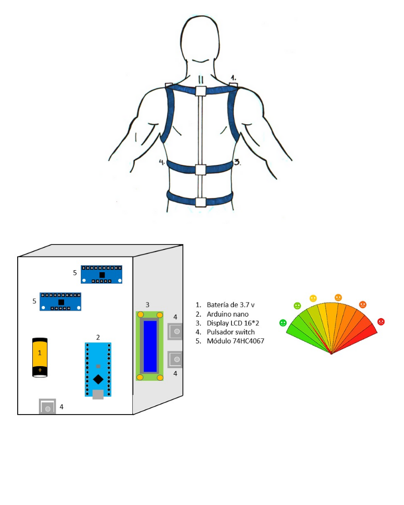
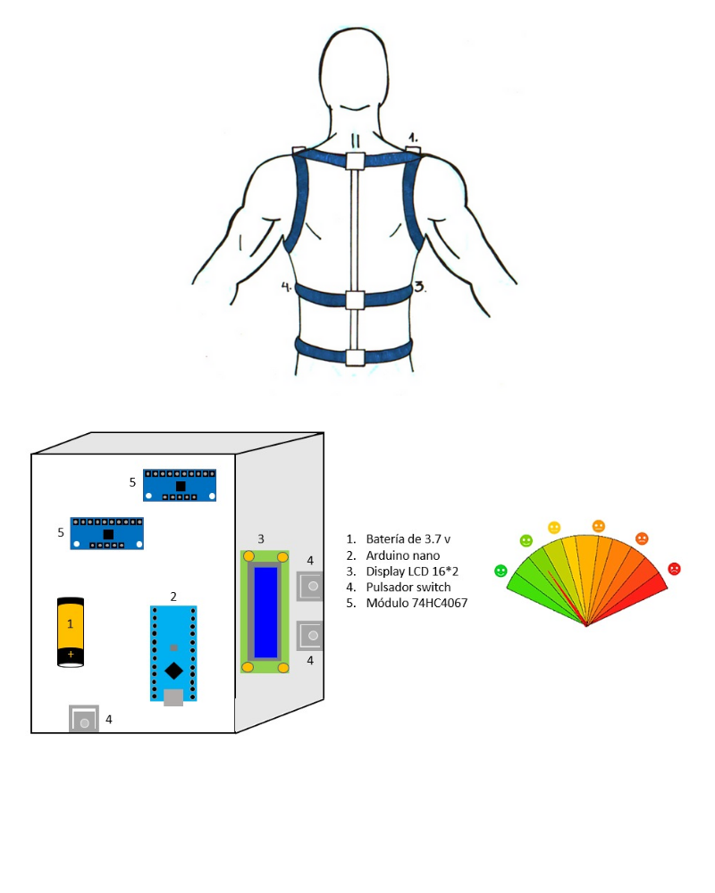

Para cada uno de los proyectos preliminares, se tomó en cuenta el concepto de solución ganador. Pero, cada uno diferenciado con un valor agregado.
El proyecto preliminar elegido, consiste en un sistema de registro de la actividad mioeléctrica del musculo dorsal ancho para el monitoreo del desplazamiento lateral de la columna vertebral mediante el uso de un árnes corporal diseñado para sujetar un sensor muscular y una caja compacta que almacene el sistema eléctrico y de control de este sensor.
Proyecto Preliminar 1

El diseño de este proyecto preliminar consiste en el uso de un arnés con un diseño parecido a un corrector de espalda. Contiene dos tipos de sensores en el diseño del arnés:
- El primer sensor está compuesto por dos acelerómetros monoaxiales para la detección de la frecuencia respiratoria y se encuentra ubicado en la zona baja del tórax.
- El segundo sensor, siendo el de nuestro concepto de solución ganador, un sensor de movimiento muscular (Myoware Muscle sensor).
Proyecto Preliminar 2

Proyecto Preliminar 3

Este proyecto preliminar tiene como variante que se puede ajustar el arnés o soporte de la parte electrónica, así que no habrá ningún inconveniente con el crecimiento del paciente. Además del uso de un sensor en el cuello, para cuantificar el progreso de la mejora de la postura del paciente.
Proyecto Preliminar 4

Se plantea el uso de dos sensores de electromiografía ubicados en la región lumbar para comparar la actividad muscular de ambos dorsales anchos. Esta actividad puede ser evaluada y medida mediante gráficas en el software por celular, pudiéndose visualizar la actividad comparada en el lado compensador y en el grupo hipotónico, al igual que la evolución de las mismas a lo largo del tiempo, datos que pueden ser enviados al médico tratante. El dispositivo considera asimismo el uso de una señal táctil (buzzer) en contacto con la piel del paciente, el cual puede ser programado para activarse bajo determinados parámetros de diferencia de actividad muscular entre ambos lados.
Para cada uno de los proyectos preliminares, se tomó en cuenta el concepto de solución ganador. Pero, cada uno diferenciado con un valor agregado.
El proyecto preliminar elegido, consiste en un sistema de registro de la actividad mioeléctrica del musculo dorsal ancho para el monitoreo del desplazamiento lateral de la columna vertebral mediante el uso de un árnes corporal diseñado para sujetar un sensor muscular y una caja compacta que almacene el sistema eléctrico y de control de este sensor.
Proyecto Preliminar 1
El diseño de este proyecto preliminar consiste en el uso de un arnés con un diseño parecido a un corrector de espalda. Contiene dos tipos de sensores en el diseño del arnés:- El primer sensor está compuesto por dos acelerómetros monoaxiales para la detección de la frecuencia respiratoria y se encuentra ubicado en la zona baja del tórax.
- El segundo sensor, siendo el de nuestro concepto de solución ganador, un sensor de movimiento muscular (Myoware Muscle sensor).
Proyecto Preliminar 2
Proyecto Preliminar 3
Este proyecto preliminar tiene como variante que se puede ajustar el arnés o soporte de la parte electrónica, así que no habrá ningún inconveniente con el crecimiento del paciente. Además del uso de un sensor en el cuello, para cuantificar el progreso de la mejora de la postura del paciente.
Proyecto Preliminar 4
Se plantea el uso de dos sensores de electromiografía ubicados en la región lumbar para comparar la actividad muscular de ambos dorsales anchos. Esta actividad puede ser evaluada y medida mediante gráficas en el software por celular, pudiéndose visualizar la actividad comparada en el lado compensador y en el grupo hipotónico, al igual que la evolución de las mismas a lo largo del tiempo, datos que pueden ser enviados al médico tratante. El dispositivo considera asimismo el uso de una señal táctil (buzzer) en contacto con la piel del paciente, el cual puede ser programado para activarse bajo determinados parámetros de diferencia de actividad muscular entre ambos lados.